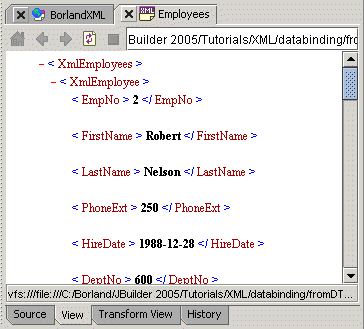
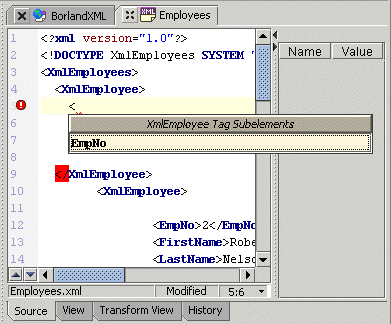

JBuilder provides several features and tools to support development of applications using the Extensible Markup Language (XML). XML, a platform-independent method of structuring information, separates the content of a document from its structure. XML can be used to exchange data between databases and Java programs. XML support features vary by JBuilder edition.
Some of the XML features include:
These are features of JBuilder Developer and Enterprise
These are features of JBuilder Enterprise
You can view an XML document in JBuilder by opening the XML document and selecting the View tab in the content pane. If the View tab is not available, you need to enable it on the XML page of the Preferences dialog box (Tools|Preferences|XML).

Use TagInsight to assist you in automatic code completion.

For more information, see:
Working with XML: Introduction
Working with XML: XML TagInsight
DataExpress Component Library Reference|XML Database Components Reference: Package com.borland.jbuilder.xml.database.template
DataExpress Component Library Reference|XML Database Components Reference: Package com.borland.jbuilder.xml.database.xmldbms
DataExpress Component Library Reference | XML Database Components Reference: Package com.borland.jbuilder.xml.database.common
XML samples: <jbuilder>/samples/XML/